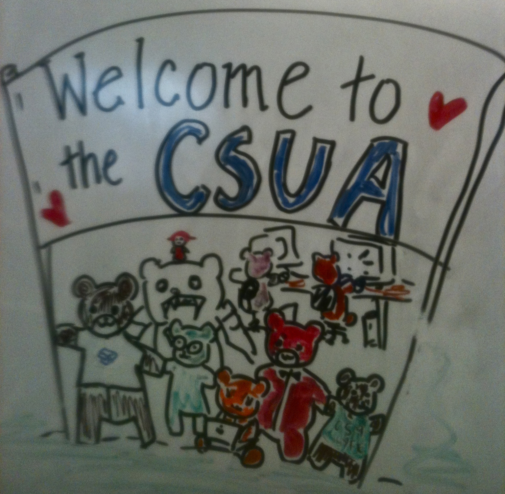

How to sign up for the CSUA
-
Visit our office at 311 Soda and sign up for an account! There’s almost always someone there during unusual business hours (noon to 4am).
Otherwise, find our table at Calpalooza or come to our open events which will be updated here.
Why you should join:
- [0] Access to industry professionals and companies. The CSUA hold e-talks, which brings in notable technical entrepreneurs to talk about building great companies, and to act as mentors to our students. Drew Houston, CEO of Dropbox, spoke in the Woz Spring 2010. Richard Stallman spoke in the Woz Summer 2010.
- [1] We help all computer science students find jobs and internships. our eTalks series, the infosessions we host, the resume workshops we run, and the alumni connections we foster, it’s almost impossible for our members not to find a job by graduation. We have a jobs listing that gets sent to you via email; send politburo@csua.berkeley.edu to be added.
- [2] Fun Events, Free Food. While we primarily serve as the entry point to the software industry, we know how to have fun too. We host hackathons with baller prizes, community meetings with free Chinese food, alumni BBQs, and more.
Contact

Our office is located in 311 Soda Hall, located at the corner of Hearst & LeRoy. In the rare case that you have an emergency and the office is vacant, you may contact the CSUA via telepathy, or email us at politburo@csua.berkeley.edu.
Computer Science Undergraduate Association University of California, Berkeley 311 Soda Hall Berkeley, CA 94720-1776